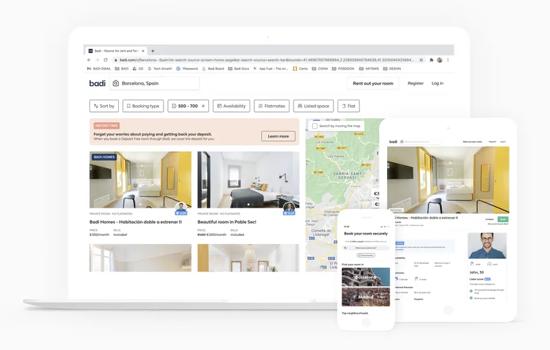
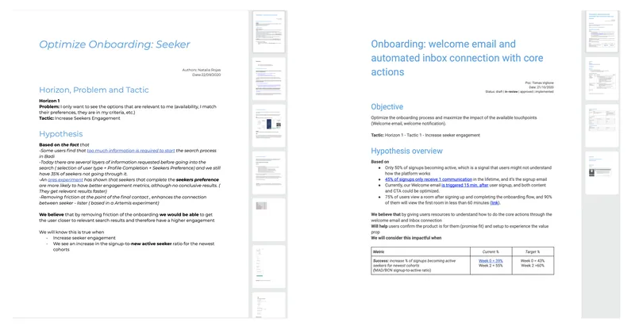
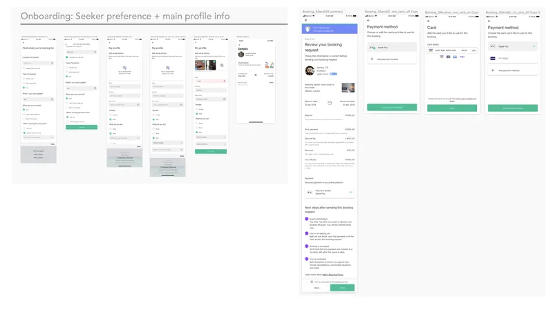
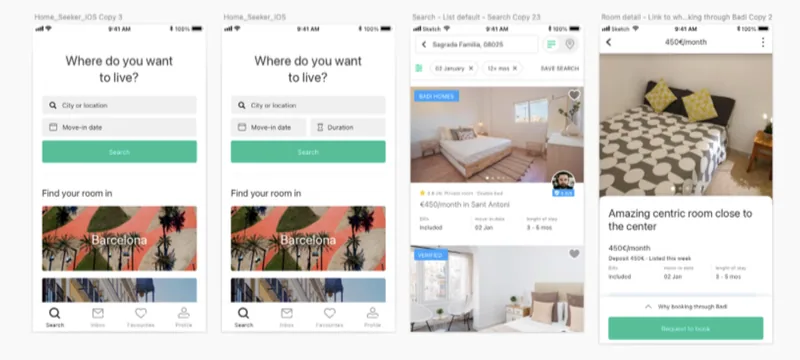
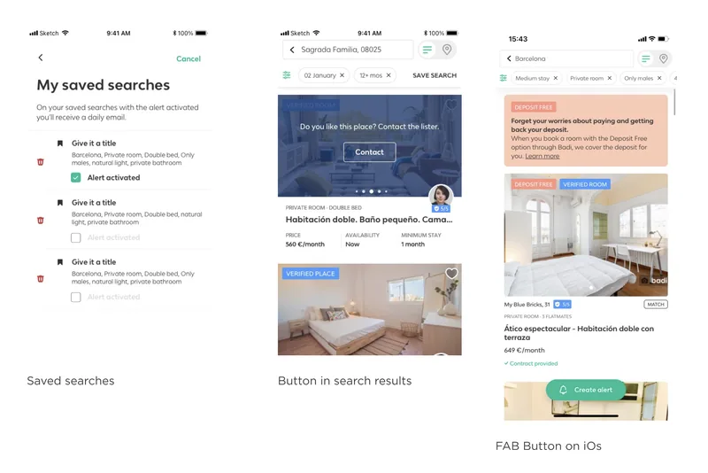
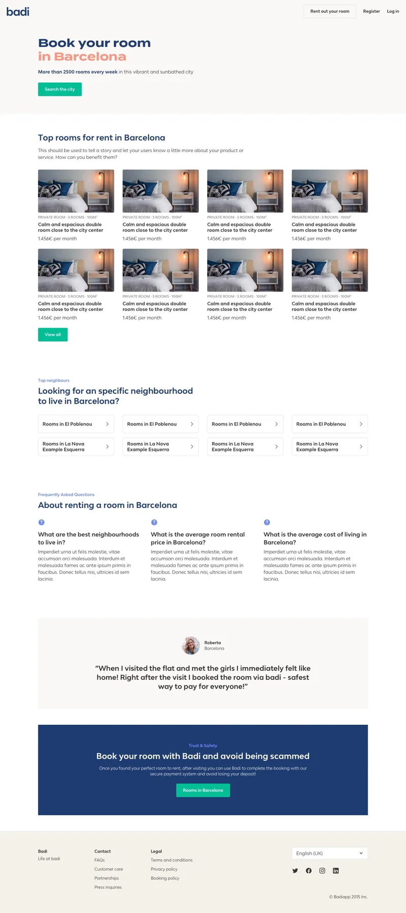
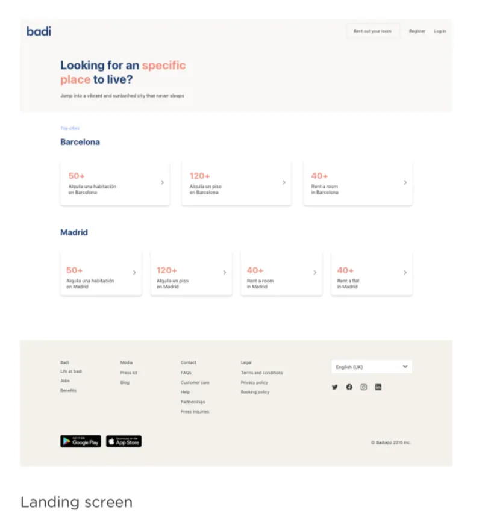

Badi Goals
#1 Create a product that people love.
#2 Reshape the Real Estate market.
#3 Apply new technologies.
#4 Eradicate intermediaries.

My Role
As a Product Designer, I worked alongside two PMs and two development teams focused on user experience and visuals. I primarily contributed to the growth team, enhancing product development and optimization with skills in product strategy, interaction, visual and UX design, data analysis, business understanding, and user empathy. I collaborated closely with product and content designers, UX researchers, data experts, and developers for core, Android, iOS, and web. This included working with product managers, Product Owners, and the marketing team.
My responsibilities include:
- Co-preparing interviews
- Decision-making on user experience and visual
- Working on fast-minded iteration and try
- Data analysis
- Keeping stakeholders updated on progress and results
- Identify opportunities for new features/flows
- Co-work with copywriters
- Co-work with the SEO department
- Keep alignment with the Development Core Team (Library-DS)
Badi's mission is to reshape the entire real estate infrastructure and make city-living accessible for everyone. Improving the user experience through a marketplace. Understanding their pain points, increasing the time on the app, making it a new easy real Estate market and improving the NPS.
The Challenge
Process
There are two ways of processes:
a. Design identify an opportunity and propose it to the PO. The flow start on research, (if there is not before), moderated or unmoderated. Afterwards once we validate it, I get in contact with the PO in charge and start the documentation.
b. PO's are the ones approaching, I receive a PVD (Product Vision Document) with the problem and the hypothesis to validate. Next steps are to validate the hypothesis and to ideate a solution for that issue. Next, to speak with the development team if it's doable and create the designs and specs. Calculation of the effort from design side.
After everything is accepted, the PO resend the final file PRD (Product requirement document), with the agreements of all the departments involved and I have the flow to design.
If on any situation the hypothesis is not true I go back to research, if possible, to work together and check it up or I go with unmoderated testing for the concept validation.
We proceed with the Epic review to check all the work done and make sure that the effort estimation was correct.
After doing the design, I do more testing unmoderated or moderated depending on the situation.

Prototyping
On the growth team, checking Mixpanel to iterate on fast features I do the fast prototypes to test on interviews, A/B testing or other unmoderated testing.
On Badi B2C or Seeker Persona was a user mainly on Mobile and B2B or Lister Persona was mainly on browser.
Some flows done are Onboarding seeker (Seeker Persona) flow for mobile devices which are afterwards made on browser too.
Update of the research screen on mobile devices and desktop.
User Personas
With Research Team we created user personas to be able to focus more on the flows and interviews, creating some storyboards.
Adding/Improving features such as: saved searches screen, saved search on scroll, CTA buttons, alert colours, fast matches, verified rooms tags, payment flow. Also understanding why or why not they click on rooms pictures. Quantity of pictures needed before a CTA. Main profile updating info and onboarding complete flow, adding and removing some screens steps.
Also creation from scratch of several landing pages, working hand on hand with SEO department.




